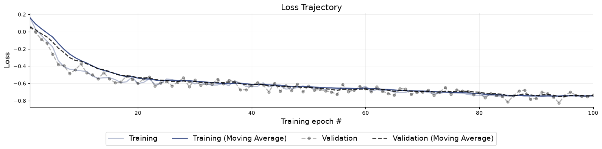
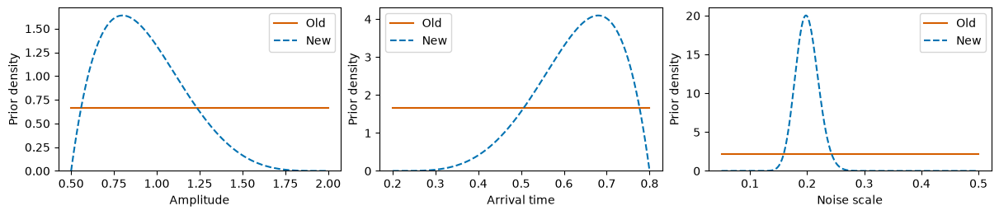
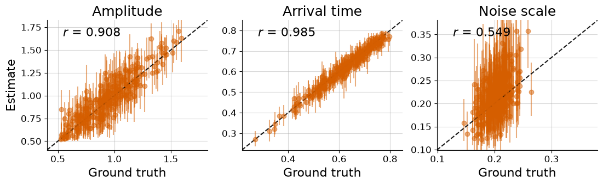
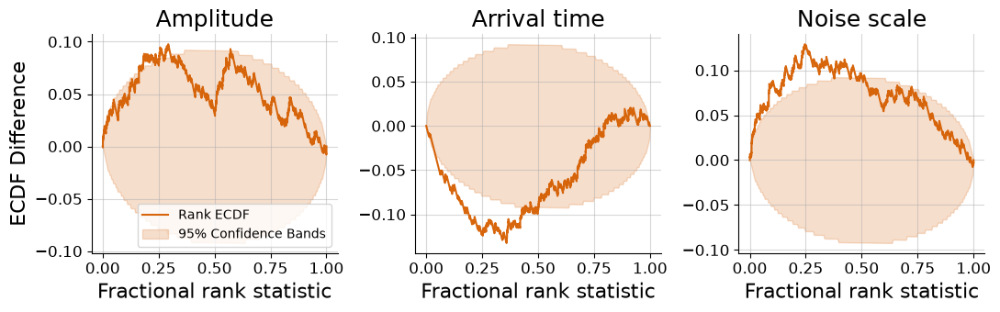
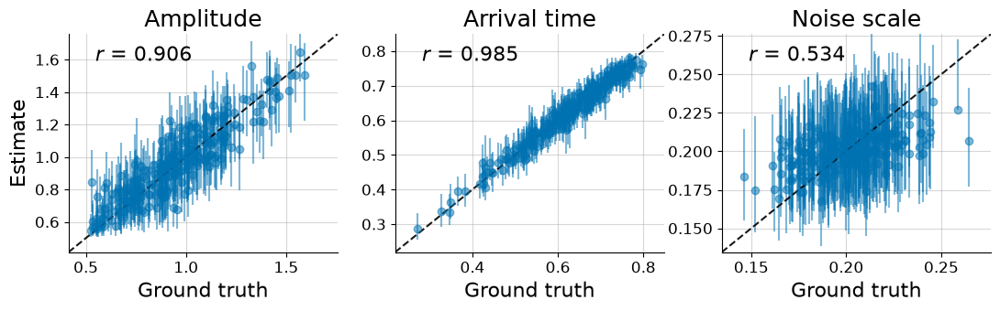
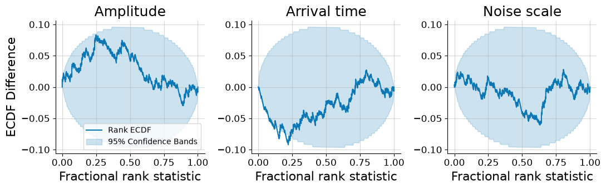

12. Changing priors at inference time#
A neural posterior estimator (NPE) is usually trained for one fixed prior or a set of priors [1, 2]. This is not always necessary. When new prior information becomes available, importance sampling can adapt its posterior samples without training a second network, as long as the old and the new prior are available in closed form. The idea is so simple and well-known, that it warrants neither a paper, nor a blog post, although we are always happy to be surprised.
This tutorial shows how to apply BayesFlow’s importance_resample utility directly to the sample dictionary returned by a workflow.
[1] Elsemüller, L., Olischläger, H., Schmitt, M., Bürkner, P. C., Köthe, U., & Radev, S. T. (2023). Sensitivity-aware amortized Bayesian inference. TMLR. arXiv link
[2] Huang, J. M., Schumacher, L., Stevenson, N., & Radev, S. T. (2026). CogFormer: Learn All Your Models Once. ProbML. arXiv link
importance_resample accepts either precomputed old and new log-density arrays or callables that evaluate the sample structure, as demonstrated below.
12.1. A noisy pulse model#
We demonstrate the idea based on a simple example. At fixed times \(t_1, \ldots, t_J\), we observe a Gaussian pulse:
The amplitude \(A\) controls the pulse height and the arrival time \(\tau\) its position. The width \(s=0.08\) and noise standard deviation \(\sigma=0.20\) are known. We train under the broad independent prior
In the implementation below, we relax the fixed-noise assumption and infer \(\sigma\) jointly. Training uses \(\sigma \sim \mathcal{U}(0.05, 0.50)\), while the inference-time shift uses a sharper Gamma prior (shape 100, scale 0.002) truncated to the same support.
import matplotlib.pyplot as plt
import numpy as np
from scipy.stats import beta as beta_dist
from scipy.stats import gamma as gamma_dist
from scipy.stats import uniform as uniform_dist
import bayesflow as bf
TIMES = np.linspace(0.0, 1.0, 25)
WIDTH = 0.08
AMPLITUDE_BOUNDS = (0.5, 2.0)
ARRIVAL_BOUNDS = (0.2, 0.8)
SIGMA_BOUNDS = (0.05, 0.50)
NEW_SIGMA_SHAPE = 100.0
NEW_SIGMA_SCALE = 0.002
PARAMETER_KEYS = ("amplitude", "arrival_time", "sigma")
LABELS = ["Amplitude", "Arrival time", "Noise scale"]
def scale_from_unit_interval(unit_values, bounds):
return bounds[0] + (bounds[1] - bounds[0]) * unit_values
def simulate_pulses(num_simulations, prior, rng=None):
"""A pulse simulator with two possible priors."""
if rng is None:
rng = np.random.default_rng()
if prior == "training":
amplitude_unit = rng.uniform(size=num_simulations)
arrival_unit = rng.uniform(size=num_simulations)
sigma = rng.uniform(*SIGMA_BOUNDS, size=num_simulations)
elif prior == "new":
amplitude_unit = rng.beta(2.0, 5.0, size=num_simulations)
arrival_unit = rng.beta(5.0, 2.0, size=num_simulations)
sigma_cdf_bounds = gamma_dist.cdf(
SIGMA_BOUNDS, a=NEW_SIGMA_SHAPE, scale=NEW_SIGMA_SCALE
)
sigma = gamma_dist.ppf(
rng.uniform(*sigma_cdf_bounds, size=num_simulations),
a=NEW_SIGMA_SHAPE,
scale=NEW_SIGMA_SCALE,
)
else:
raise ValueError("prior must be 'training' or 'new'")
amplitude = scale_from_unit_interval(amplitude_unit, AMPLITUDE_BOUNDS)
arrival_time = scale_from_unit_interval(arrival_unit, ARRIVAL_BOUNDS)
mean = amplitude[:, None] * np.exp(
-0.5 * ((TIMES[None, :] - arrival_time[:, None]) / WIDTH) ** 2
)
signal = mean + rng.normal(scale=sigma[:, None], size=mean.shape)
return {
"amplitude": amplitude[:, None],
"arrival_time": arrival_time[:, None],
"sigma": sigma[:, None],
"signal": signal,
}
All simulation and resampling randomness comes from independent local NumPy generators.
train = simulate_pulses(20_000, prior="training")
validation = simulate_pulses(500, prior="training")
12.2. Train the posterior estimator once#
The adapter combines \(A\) and \(\tau\) into the inference variables and uses the 25 signal values as inference conditions. A stable consistency model then learns \(q_\phi(A, \tau \mid x)\) under the training prior.
adapter = (
bf.Adapter()
.constrain("amplitude", lower=AMPLITUDE_BOUNDS[0], upper=AMPLITUDE_BOUNDS[1])
.constrain("arrival_time", lower=ARRIVAL_BOUNDS[0], upper=ARRIVAL_BOUNDS[1])
.constrain("sigma", lower=SIGMA_BOUNDS[0], upper=SIGMA_BOUNDS[1])
.concatenate(PARAMETER_KEYS, into="inference_variables")
.rename("signal", "inference_conditions")
)
workflow = bf.BasicWorkflow(
adapter=adapter,
inference_network=bf.networks.StableConsistencyModel(subnet_kwargs={"widths": (128,)*3}),
standardize="all",
initial_learning_rate=1e-3
)
history = workflow.fit_offline(
train,
validation_data=validation,
epochs=100,
batch_size=512,
verbose=0,
)
INFO:bayesflow:Fitting on dataset instance of OfflineDataset.
INFO:bayesflow:Building on a test batch.
INFO:bayesflow:Training completed in 56.08 seconds.
fig = bf.diagnostics.loss(history)

12.3. Change the prior without retraining#
Suppose new information favors smaller pulses and later arrival times, which we can express with the new priors:
Let \(p_{old}(\theta)\) denote the training prior and \(p_{new}(\theta)\) the new prior. Since the likelihood is unchanged, the posterior under new prior is:
Thus, we can reweight draws from the trained NPE by the prior-density ratio and resample them into the equally weighted form expected by BayesFlow diagnostics. This requires the new prior to have no support outside the training prior.
grid = np.linspace(0.0, 1.0, 501)
fig, axes = plt.subplots(1, 3, figsize=(12, 2.5), layout="constrained")
prior_bounds = (AMPLITUDE_BOUNDS, ARRIVAL_BOUNDS, SIGMA_BOUNDS)
plot_values = [scale_from_unit_interval(grid, bounds) for bounds in prior_bounds]
sigma_normalizer = gamma_dist.cdf(
SIGMA_BOUNDS[1], a=NEW_SIGMA_SHAPE, scale=NEW_SIGMA_SCALE
) - gamma_dist.cdf(SIGMA_BOUNDS[0], a=NEW_SIGMA_SHAPE, scale=NEW_SIGMA_SCALE)
new_densities = (
beta_dist.pdf(grid, 2.0, 5.0) / (AMPLITUDE_BOUNDS[1] - AMPLITUDE_BOUNDS[0]),
beta_dist.pdf(grid, 5.0, 2.0) / (ARRIVAL_BOUNDS[1] - ARRIVAL_BOUNDS[0]),
gamma_dist.pdf(
plot_values[2], a=NEW_SIGMA_SHAPE, scale=NEW_SIGMA_SCALE
) / sigma_normalizer,
)
for ax, values, bounds, new_density, label in zip(
axes, plot_values, prior_bounds, new_densities, LABELS
):
width = bounds[1] - bounds[0]
ax.plot(
values, np.full_like(values, 1.0 / width), color="#D55E00", label="Old"
)
ax.plot(values, new_density, "--", color="#0072B2", label="New")
ax.set(
xlabel=label,
ylabel="Prior density",
ylim=(0, 1.05 * max(1.0 / width, new_density.max())),
)
ax.legend()

For a valid calibration check under the new prior, the ground-truth parameters must also be drawn from that prior. We pass their simulated data through the already-trained NPE; there is no second training call.
new_test = simulate_pulses(256, prior="new")
base_posterior = workflow.sample(conditions={"signal": new_test["signal"]}, num_samples=1000)
INFO:bayesflow:Sampling completed in 15.58 seconds.
The resampling utility is model-agnostic: the two callbacks below contain every model-specific detail. They accept the native BayesFlow sample dictionary and return one log density per posterior draw. The scaled Beta densities include their change-of-variables terms.
def old_prior_log_prob(samples):
amplitude = samples["amplitude"][..., 0]
arrival_time = samples["arrival_time"][..., 0]
sigma = samples["sigma"][..., 0]
return (
uniform_dist.logpdf(
amplitude,
loc=AMPLITUDE_BOUNDS[0],
scale=AMPLITUDE_BOUNDS[1] - AMPLITUDE_BOUNDS[0],
)
+ uniform_dist.logpdf(
arrival_time,
loc=ARRIVAL_BOUNDS[0],
scale=ARRIVAL_BOUNDS[1] - ARRIVAL_BOUNDS[0],
)
+ uniform_dist.logpdf(
sigma,
loc=SIGMA_BOUNDS[0],
scale=SIGMA_BOUNDS[1] - SIGMA_BOUNDS[0],
)
)
def scaled_beta_log_prob(values, bounds, shape_a, shape_b):
width = bounds[1] - bounds[0]
unit_values = (values - bounds[0]) / width
return beta_dist.logpdf(unit_values, shape_a, shape_b) - np.log(width)
def new_prior_log_prob(samples):
amplitude = samples["amplitude"][..., 0]
arrival_time = samples["arrival_time"][..., 0]
sigma = samples["sigma"][..., 0]
sigma_normalizer = gamma_dist.cdf(
SIGMA_BOUNDS[1], a=NEW_SIGMA_SHAPE, scale=NEW_SIGMA_SCALE
) - gamma_dist.cdf(
SIGMA_BOUNDS[0], a=NEW_SIGMA_SHAPE, scale=NEW_SIGMA_SCALE
)
return (
scaled_beta_log_prob(amplitude, AMPLITUDE_BOUNDS, 2.0, 5.0)
+ scaled_beta_log_prob(arrival_time, ARRIVAL_BOUNDS, 5.0, 2.0)
+ gamma_dist.logpdf(sigma, a=NEW_SIGMA_SHAPE, scale=NEW_SIGMA_SCALE)
- np.log(sigma_normalizer)
)
def prior_log_ratio(samples):
return new_prior_log_prob(samples) - old_prior_log_prob(samples)
Before correction, the samples still describe the posterior induced by the training prior, even though these data and ground truths came from the new prior.
_ = bf.diagnostics.recovery(
base_posterior, new_test, variable_names=LABELS, color="#D55E00", figsize=(11, 3.5)
)
_ = bf.diagnostics.calibration_ecdf(
base_posterior,
new_test,
variable_names=LABELS,
rank_ecdf_color="#D55E00",
fill_color="#D55E00",
legend_fontsize=10,
figsize=(11, 3.5)
)


importance_resample computes the log prior-density ratio, normalizes the importance weights, and applies systematic resampling across the posterior-draw axis. The output has the same dictionary structure and array shapes as the input.
shifted_posterior = workflow.importance_resample(
samples=base_posterior,
log_ratio=prior_log_ratio,
method="is"
)
The recovery and calibration plots now assess the resampled posterior under the new prior. Calibration is mostly fixed, especially for the noise scale.
_ = bf.diagnostics.recovery(
shifted_posterior, new_test, variable_names=LABELS, color="#0072B2", figsize=(11, 3.5)
)
_ = bf.diagnostics.calibration_ecdf(
shifted_posterior,
new_test,
variable_names=LABELS,
rank_ecdf_color="#0072B2",
fill_color="#0072B2",
figsize=(11, 3.5),
legend_fontsize=10
)


12.4. Limitations#
Importance resampling is most useful for a contained, moderate prior change. It cannot recover posterior mass outside the training prior’s support, and strongly concentrated weights leave too few distinct samples after resampling. In either case, train under a broader prior or retrain for the new prior.
Moreover, the density-ratio identity is exact for samples from the old posterior, but in SBI, the samples come from an approximation \(q_\phi\). Consequently, the corrected distribution is proportional to $\( q_\phi(\theta \mid x) p_{new}(\theta) / p_{old}(\theta), \)$
and inherits any approximation error or overconfidence in the NPE (Hermans et al., 2022). Poor overlap is a separate Monte Carlo problem, as the required number of importance samples can grow roughly exponentially with the KL divergence between target and proposal (Chatterjee & Diaconis, 2018). Heavy right-tailed ratios lead to unstable estimates and motivate diagnostics, such as Pareto \(\hat{k}\) (Vehtari et al., 2024).
More general prior-sensitivity calculations based on the same density-ratio identity are discussed by Sugasawa (2026).